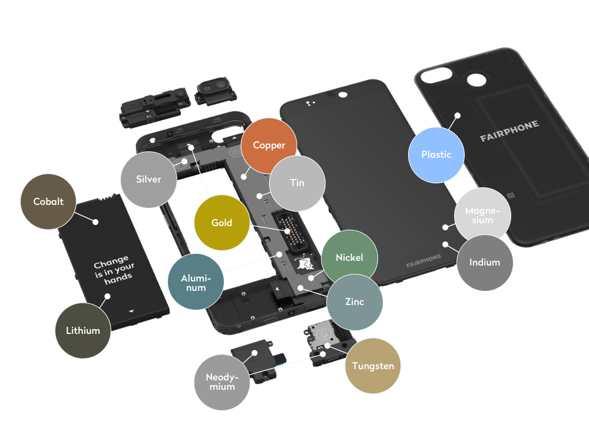
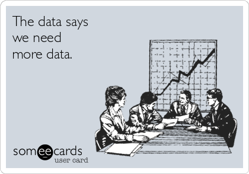
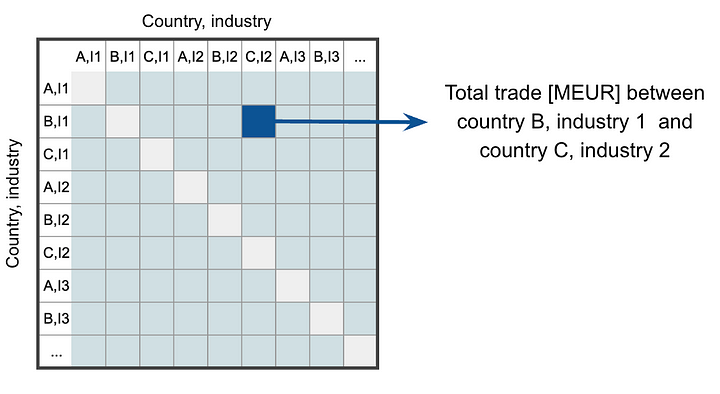
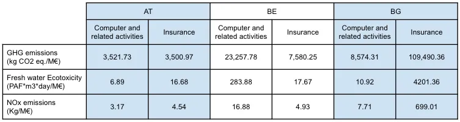
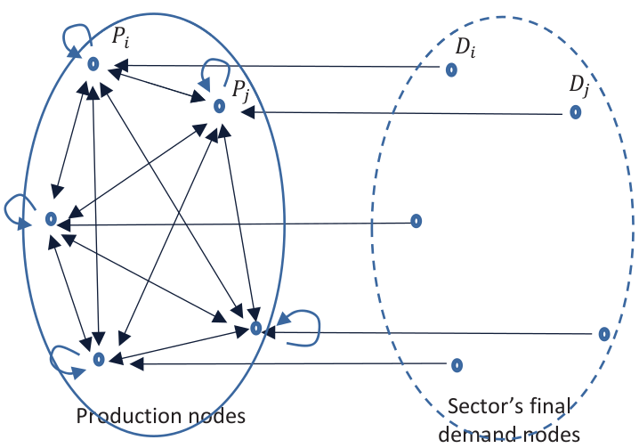
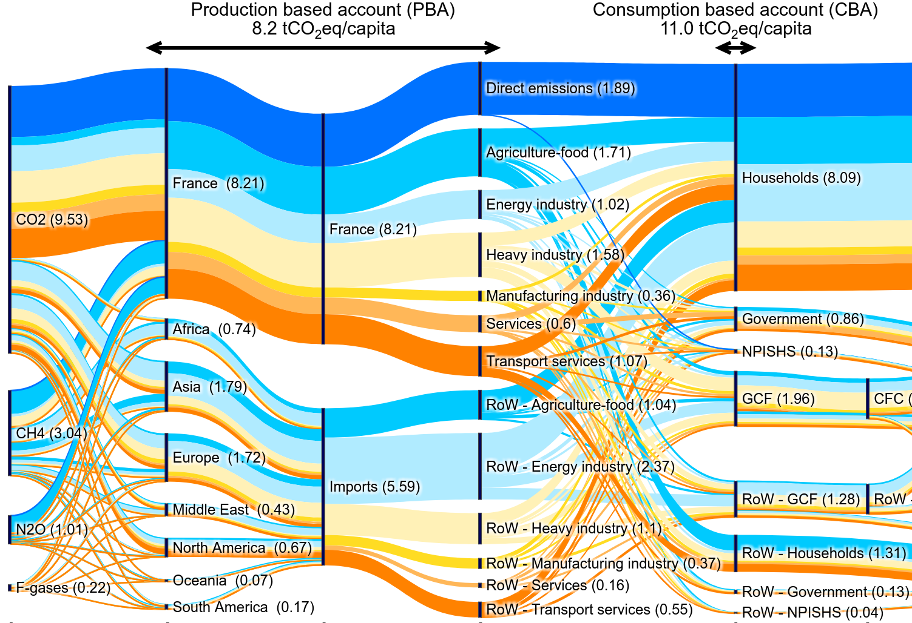
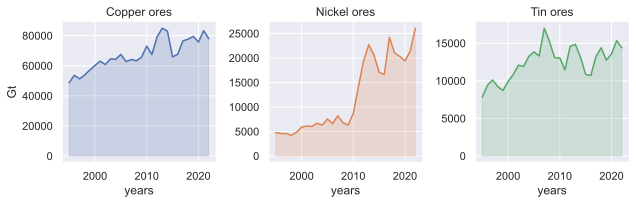
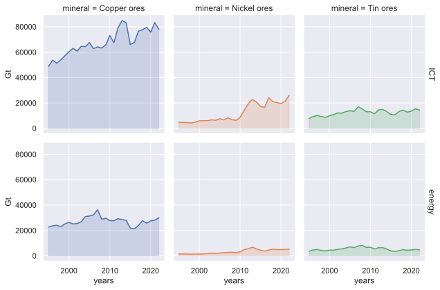
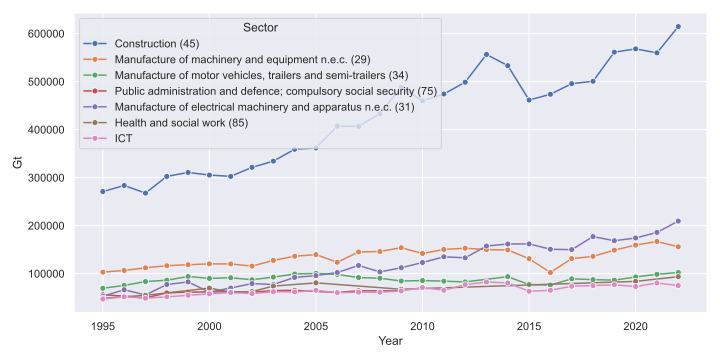
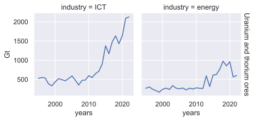

From Bottom-Up to Top-Down
Rethinking Approaches to Assessing ICT's Mineral Dependencies
Thibault SIMON
Adrien LUXEY-BITRI
An expensive ratatouille

Within a growing sector

Relying on similar minerals as the energy transitions

Sould limits be put in place on the ICT sector?
Sould limits be put in place on the ICT sector?

Implies a better understanding of the intricate relationship betwen the ICT and mineral industries
Industrial ecology accounting frameworks
Environmentally Extended Input Output (EEIO)
Multi-Regional Input Output modeling (MRIO)

Environmentally extended Input Output (EEIO)

Leontief modeling

Consumption Based Acounting (CBA)
An example by capita

ICT mineral footprint evolution
Exiobase
Metals and minerals databases:


EEIO issues
Sectors' definition

Sectors' copper consumption (CBA)
Environmental data normalization

Conclusion
The cons
- Cannot accurately trace which minerals goes into specific products (i.e. smartphones)
- Old sectors' economic definition (2002, ISIC Rev. 3.1)
- High uncertainty levels induced by normalzation of impacts to monetary flows
The pros
- Tracing of upstream impacts (i.e. CBA), over multiple impact categories
- Enable comparison between sectors
- Open data and methodologies
- Normalized data, enabling comparison over years
- Possible to model a change of demand, thus prospective scenarios
The ICT sector's is not the biggest consumer of metal and minerals.
However, its high dependency on by-products makes its supply chain uncertain